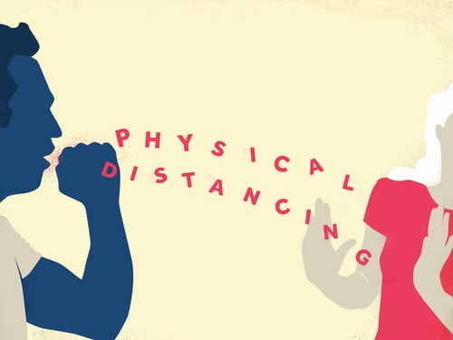

What to do at home?
As much as possible, keep away from other people and pets in your home.
Wear a cloth face covering (or face mask, if you have one) if they must be around other people. Cloth face coverings are for use only by people older than 2 years old who are not having trouble breathing. Do not leave a child alone while they're wearing a cloth face covering. To see how to put on and remove cloth face coverings and face masks, clean them, or make your own cloth face covering
When Should I Call the Doctor?
If the person you're caring for seems to be getting sicker, call your doctor right away. Tell the doctor about their symptoms and whether they've been tested for coronavirus (COVID-19).
If they need to go to the doctor:
- The person should wear a cloth face covering, if available.
- Keep tissues handy in case they need to cough or sneeze.

What is social distancing?
Social distancing, also called “physical distancing,” means keeping a safe space between yourself and other people who are not from your household.
To practice social or physical distancing, stay at least 6 feet (about 2 arms’ length) from other people who are not from your household in both indoor and outdoor spaces.